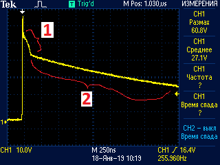
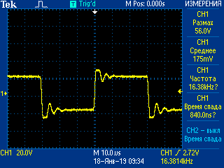

Дозиметр ренгеновского излучения
ДКР-АТ1103М
Как прошить
Как сделать инициализацию 957
Как проверить ток потребления и ток заряда
- Все 11ХХ изначально прошиты прошивкой 1123(?)
, поэтому первое,что необходимо сделать, это прошить дозиметр нужной прошивкой
- Наклеить наклейки с внутренним порядковым номером, полученным с монтажа приборам
- Провести внешний осмотр плат прибора на:
- соответствие типа номиналов элементов и правильность их установки согласно ПЭ3 и СБ.
- отсутствие обрывов и коротких замыканий элементов и печатных проводников.
- отсутствие коротких замыканий по шинам питания.
- Визуально проконтролировать одинаково высокую контрастность свечения всех сегментов ЖКИ, для этого после
включения прибора и появления индикации тестового изображения нажать и удерживать кнопку «» для удержания на
табло тестового изображения на требуемое время, после чего кнопку «»отпустить
- Провести инициализацию 957
- Проверить ток потребления и ток заряда БА
- К выключенному ДКР подключить адаптер 12В, при этом на табло должен загореться символ , указывающий на
подключение внешнего источника питания и индицирующий работу режима заряда БА
- Проверить осциллографом наличие светодиодного импульса в точке 11 платы преобразователя ”фон”.
Максимальная амплитуда сигнала не должна превышать 100В и иметь такую форму(обязательно иметь "горб"[1] и длинный "спад"[2]):

- Проверить осциллографом наличие высоковольтных импульсов в точке 14 платы преобразователя ”фон”.
Максимальная амплитуда сигнала не должна превышать 70в и иметь такую форму
(при превышении напряжения свыше 70В, незамедлительно отключите прибор!):

- Выставить смещение -3…5мВ (используется вольтметр В7-77) на выводе 7 D4.2 путем подбора и установки
резисторов R39 и R40 платы усилителя «Фон»
- Выставить уровень опорного сигнала (сигнал светодиода пройденного через блок ФЭУ) на выводе 7 D4.2 (рис.5) в
значение 1.25…1.28В (используется осциллограф Tektronix TDS 2012C) как показано на рис. 6 путем подстройки
потенциометра R38 (рис. 7). В случае если диапазона регулировки этого потенциометра недостаточно для
установления требуемого значения уровня то следует подобрать резистор R37 для установки нужного значения (рис. 5)
- Предварительная калибровка по Ba133:
- Подключите прибор к ПЭВМ с помощь кабеля БД через модуль адаптера USB-БД (рис. 8)
- Переведите прибор в спектрометрический режим F5
- Запустите программу ATAS tech. Нажмите режим «инициализировать соединение». Программа должна обнаружить прибор и
вывести на экран спектр, считываемый с прибора (рис. 9).
- При помощи подборочного резистора R13 грубо и потенциометра R16 платы преобразователя «ФОН» (рис. 10) точно
установите второй пик спектра Ba133 в 109±1 канал. При этом первый пик Ba133 должен находится примерно в 42
канале (рис. 11)
- Проконтролировать вольтметром В7-77 напряжение на 3 выводе микросхемы D8 платы преобразователя «Фон» (рис.
12). Оно должно находится в примерно в середине диапазона 0,7…1,7В, что свидетельствует о том что потенциометр
после регулировки не находится в крайних положениях а схема температурной стабилизации высокого находится в
рабочем режиме.
- Проконтролировать вольтметром В7-77 напряжение на 6 выводе микросхемы D8 платы преобразователя «Фон» (рис.
12). Оно не должно превышать значения 4,2 В для нормальной работы схемы светодиодной стабилизации!
- Проконтролировать вольтметром В7-77 напряжение на эмиттере транзистора VT6 (или +С24) платы преобразователя
«Фон». При нормальном режиме работы прибора оно не должно превышать половины напряжения питания т. е. +3В и
является косвенным показателем уровня высокого напряжения на ФЭУ!
- Записать показания в паспорт настройки (Форма 1. Приложение 1) и отдать прибор на приработку.